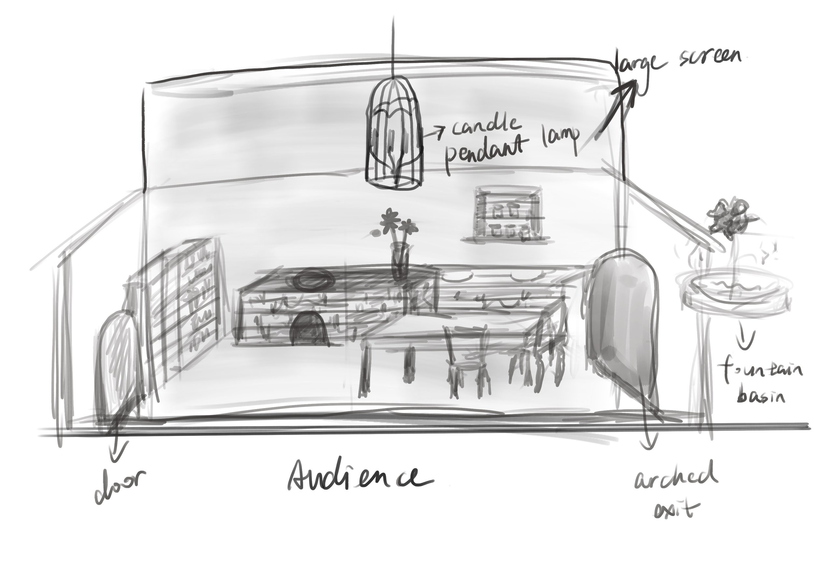
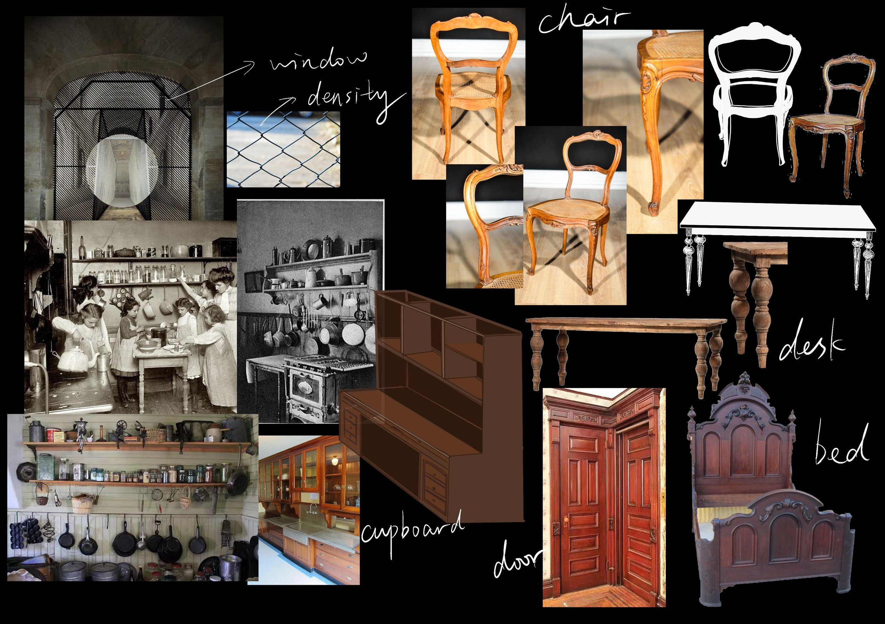
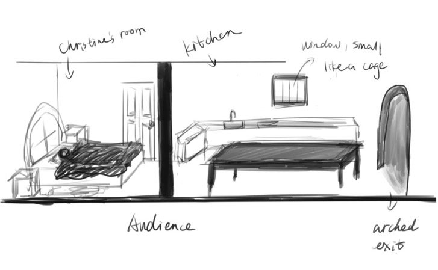
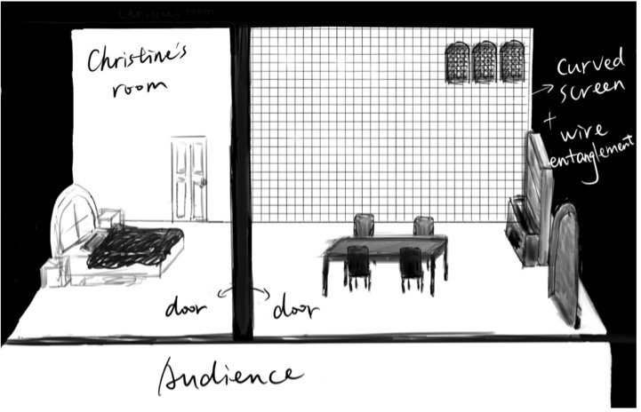
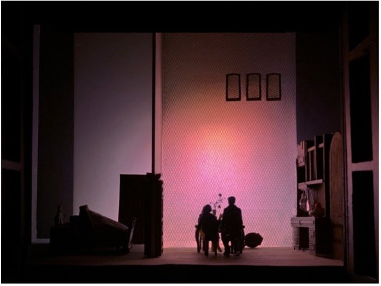
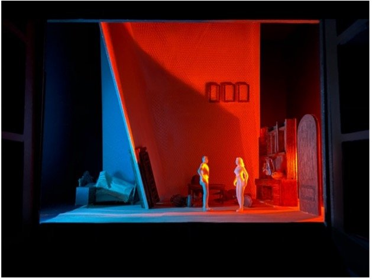

Miss Julie is Strindberg's naturalistic masterpiece. The play's preface is an essential document in the history of drama, defining the aesthetic precepts of naturalism from the perspective of the theatrical stage (Stockenström,2004). Strindberg's naturalism focuses on the conflict of spirit and shows the struggle between his spiritual desires (Zhang,1994).

Figure 1
When I read the play for the first time, I noticed that the environment's description is very detailed, so I drew a simple sketch (see Figure 1) to demonstrate what I felt. I wanted to follow realistic naturalism but didn't want to copy the original work scene completely. When I was thinking about from which angle to design the stage, I felt more inclined to express the characters' psychological conflict. Concise stage settings and props are undoubtedly powerful means to present the mental status of the characters. I hope that when the audience sees the stage through the fourth wall, they can focus on the actors' performance and movements. I set the play's historical background at the end of the 19th century, and the yellowish-brown furniture can well show the basic style of home decoration at that time (see Figure 2). I also combined minimalism into my design under the guidance of which I didn't put too much furniture on the stage. I want to tell the audience that it is a kitchen through simple tables, chairs and cabinets.

Figure 2
My inspiration mainly came from two different plays. The first is the naturalistic drama, the Red Barn (https://www.nationaltheatre.org.uk/file/red-barn-behind-scene-changes). There is a scene in which the two protagonists are found to be having an affair, and the designer of the play skillfully combines the two scenes together to show the tension at that time through the comparison of two contrast colors, yellow and blue, which respectively represents warm and cold. This feeling led me to connect it with Miss Julie, and I thought that it would be a good idea to set Christine’s bedroom closely to the kitchen where Miss Julie and Jean having much interaction, offering the audience the feeling that the three of them are not far in a physical sense when the play goes on (see Figure 3).

Figure 3
The second is a surrealistic play Rooman (https://mimelondon.com/fleur-elise-noble-rooman-2020/). Its stage setting includes three irregular screens and the pictures in these three screens are connected to each other. In addition to projection, it also uses puppets and real actors. Although there is no dialogue among the actors throughout the whole play, the scene makes you feel like a part of it. It inspires me that I can use some similar methods to visualize the characters’ fantasy in Miss Julie. When Julie and Jean talk about their dreams, the content will be projected onto the screen so that the audience can see the imaginary scene, and to better understand the hope and despair the characters deliver in their fantasy.

Figure 4
In the final design, I divided the stage into two parts, with Christine's bedroom on the left and the kitchen on the right（see Figure 4）. The audience can clearly see whether Christine is actually sleeping. When Jean and Julie are talking, Christine is in a complicated condition of being there and not there – Jean and Julie actually don’t know if she’s actually asleep or not. There’s great uncertainty in it, and that’s why she only occupies a small part of the stage. The wall in the middle of the stage will tilt with the progressing of the plot, which will give people a sense of oppression. It can also show the change in the importance of Julie and Christine will change in Jean’s mind with the development of the plot. Christine's bedroom has two doors, one leading to the kitchen and the other to the backstage (the living room). In my opinion, the door is a symbol of psychological defence. The door leading to the living room makes it convenient for Christine to reply to her master's request at any time to show that she’s obedient to her master. The kitchen is more like a living room. There is no need to change the scene in this one-act play so I even excluded the bedroom of Jean, where he and Julie had a one-night stand, and this part of the story can be set in the kitchen.

Figure 5

Figure 6
Whether it is a movie or a stage play, the cooperation of props, lighting, clothing, makeup, and other departments is indispensable. I used the change of lights to show the inner changes of Julie and Jean on the stage. The color of pink shows that Julie is facing temptation and the rise of lust in her heart on a midsummer night when she’s talking to Jean about their dreams and thoughts (see Figure 5). After everything happens, the conflict between Jean and Julie breaks out, then I use the comparison of red and blue to show a strong tension between them, and the changing of sloping wall shows a dynamic change of the character's status and the change of their mind (see Figure 6).
In terms of clothing, I looked up a lot of information and referred to the book 19th-century fashion in detail. With the industrial revolution in the 19th century, clothes can be produced by machines, and patterns and decoration also gradually increased enabled by technology advancement. Women became more likely to show their waistlines. In the 1880s, light corsets became fashionable, with skirts long enough to reach the ankle (see Figure 7). In the process of designing Julie's skirt, I used the basic style of the 19th century and chose lilac flowers when I looked for patterns. The flower language of lilac is pure and innocent, which is similar to one side of Julie, who is not yet mature, somewhat simple but also with a bit of arrogance.
My works are always in a realistic style, and it’s the first time for me to design the stage with a real theatre setting. I’ve seen many areas for me to improve through this project. First, I think I can further open my thinking in the future, and be bolder and more innovative, to try some new styles besides realism; second, I would like to try different methods and techniques to make models in the future; third, I want to try new styles in the future.
(1063 words)
Reference
1. Fleur Elise Noble ROOMAN (2019). Available at: https://mimelondon.com/fleur-elise-noble-rooman-2020/
2. Franchuk, E. S. (1993) “Symbolism in Miss Julie,” Theatre Research International. Cambridge University Press, 18(S1), pp. 11–15. doi: 10.1017/S0307883300021052.
3. Harris, Jenava Moreau, "Strindberg's Miss Julie: An Exploitation of Genderlect and Liberatory Pedagogy" (2016). Theses from 2016. 3. https://orc.library.atu.edu/etds_2016/3
4. Johnston, l., kite, m. and Persson, h., 2005. Thames & Hudson Ltd; 1St Edition (3 Nov. 2016). Thames & Hudson Ltd; 1st edition (3 Nov. 2016), pp.88-201.ISBN 978-500-29264-8
5. Li Yuan. (2009). August Strindberg's view of women (Master's thesis, Shandong Normal University). https://kns.cnki.net/KCMS/detail/detail.aspx?dbname=CMFD2009&filename=2009125607.nh
6. Stockenström, G. (2004). The Dilemma of Naturalistic Tragedy: Strindberg's "Miss Julie". Comparative Drama,38(1), 39-57. Retrieved December 23, 2020, from http://www.jstor.org/stable/41154213
7. Szalczer, E. (2001). Nature's Dream Play: Modes of Vision and August Strindberg's Re-Definition of the Theatre. Theatre Journal, 53(1), 33-52. Retrieved January 6, 2021, from http://www.jstor.org/stable/25068882
8. The Red Barn: Behind The Scene Changes | National Theatre (2020). Available at: https://www.nationaltheatre.org.uk/file/red-barn-behind-scene-changes
9. TÖRNQVIST, E. (1995). Strindberg, Miss Julie (1985). In Between Stage and Screen: Ingmar Bergman Directs (pp. 46-58). Amsterdam: Amsterdam University Press. doi: 10.2307/j.ctt46mtnz.7
10. Wang, Shanshan. (2016). On the space of drama and the drama of space (Master's thesis, Nanjing Arts Institute). https://kns.cnki.net/KCMS/detail/detail.aspx?dbname=CMFD201701&filename=1016215116.nh
11. Zhang Zhixiang. (1994). From naturalism to expressionism: Strindberg's exploration of dramatic creation. Journal of Lanzhou University (02).